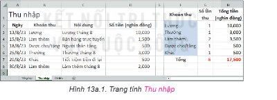
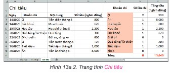
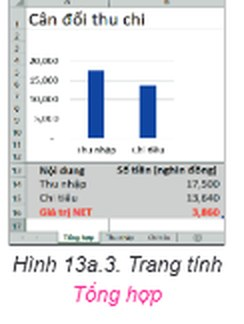
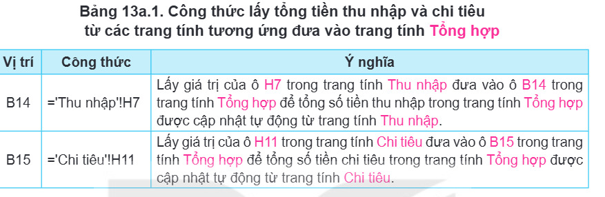
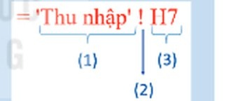
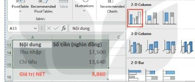

Dành cho giáo viên
Theo dõi lớp
| Học sinh / Nhóm | Đã nộp | Cập nhật |
|---|
Bước 1
1 Khởi động
Khởi động Bảng tính cần bổ sung gì?
Dự án sử dụng bảng tính điện tử quản lí tài chính gia đình đã hoàn thành các trang tính Thu nhập và Chi tiêu. Theo em, để cân đối thu, chi, giúp kiểm soát chi tiêu gia đình hiệu quả, bảng tính cần bổ sung thông tin gì?
Ghi bài Khởi động
Sau khi thầy cô chốt, em chép nội dung dưới đây vào vở.
Bước 2 · Hình thành kiến thức mới
2.1 Trang tính tổng hợp dữ liệu tài chính gia đình
Hoạt động 1 Tổng hợp dữ liệu tài chính gia đình
Quan sát Hình 13a.1 và Hình 13a.2, em thấy các khoản thu và chi đã được tính tổng số tiền (tại ô H7 và H11). Để cân đối thu, chi, trang tính Tổng hợp được bổ sung vào bảng tính như Hình 13a.3. 1. Em hãy chỉ ra mối liên hệ về dữ liệu của trang tính Tổng hợp ở Hình 13a.3 với hai trang tính Thu nhập và Chi tiêu ở Hình 13a.1 và Hình 13a.2. 2. Trong trang tính Tổng hợp, công thức để tính tổng thu nhập ở ô B14 là gì? Công thức để tính tổng số tiền chi tiêu ở ô B15 là gì?



Đọc hiểu Trang tính Tổng hợp
Đọc mục 1 (SGK trang 53). Từ hai nguồn dữ liệu trong hai trang tính Thu nhập và Chi tiêu, em có thể tổng hợp thông tin một cách trực quan để có kịp thời điều chỉnh các khoản thu, chi. Trong bảng tính quản lí tài chính gia đình, ở trang tính Tổng hợp, tổng tiền thu nhập ở ô B14 chính là giá trị ở ô H7 trong trang tính Thu nhập, tổng tiền chi tiêu ở ô B15 chính là giá trị ở ô H11 trong trang tính Chi tiêu. Công thức cho các ô B14, B15 trong trang tính Tổng hợp được trình bày chi tiết trong Bảng 13a.1.

Trong trang tính Tổng hợp, Giá trị NET là số tiền chênh lệch giữa thu và chi. Giá trị NET nhỏ sẽ cho thấy gia đình đang chi tiêu nhiều, cần được báo động để tất cả các thành viên thực hiện tiết kiệm. Bên cạnh đó, em có thể bổ sung biểu đồ để hiển thị số liệu thu và chi một cách trực quan, dễ so sánh, giúp cho việc quản lí tài chính gia đình được dễ dàng và hiệu quả.
Câu hỏi SGK trang 53
1. Hình 13a.4 là công thức lấy tổng tiền thu nhập từ trang tính Thu nhập đưa vào trang Tổng hợp. Hãy ghép mỗi cụm từ Địa chỉ ô, Tên trang tính, Dấu chấm than vào vị trí tương ứng sao cho phù hợp. 2. Trong một bảng tính có chứa nhiều trang tính, nếu công thức tham chiếu đến địa chỉ ô ở một trang tính khác, thì địa chỉ ô đó gồm những thành phần gì?

Ghi bài 1. Trang tính tổng hợp dữ liệu tài chính gia đình
Sau khi thầy cô chốt, em chép nội dung dưới đây vào vở.
Bước 2 · Thực hành
2.2 Thực hành: Hoàn thiện bảng tính quản lí tài chính gia đình
Nhiệm vụ TaiChinhGiaDinh.xlsx
Tính tổng thu nhập và chi tiêu, bổ sung trang tính Tổng hợp để cân đối thu, chi như Hình 13a.1, Hình 13a.2 và Hình 13a.3. Hướng dẫn. a) Tính tổng số tiền trong trang tính Thu nhập và Chi tiêu: mở bảng tính TaiChinhGiaDinh.xlsx, chọn trang tính Thu nhập như Hình 13a.1; tại ô H7, nhập công thức =SUM(H2:H6) để tính tổng số tiền thu nhập; nháy chuột chọn trang tính Chi tiêu như Hình 13a.2; tại ô H11, nhập công thức =SUM(H2:H10) để tính tổng số tiền đã chi tiêu; lưu tệp.
b) Tạo trang tính Tổng hợp: tạo thêm một trang tính mới, đặt tên trang tính là Tổng hợp. Tại ô A1, nhập tiêu đề bảng tính là Cân đối thu chi. Tạo bảng dữ liệu trong vùng A13:B16, trong đó công thức tại ô B14 và B15 xem ở Bảng 13a.1. Công thức tại ô B16 là =B14-B15. Tạo biểu đồ cột hiển thị trực quan giá trị thu và chi: chọn vùng dữ liệu tạo biểu đồ là A13:B15; trong dải lệnh Insert, ở nhóm lệnh Charts, chọn dạng biểu đồ Clustered Column (Hình 13a.5). Đặt biểu đồ vào vị trí A2:B12, chỉnh sửa thông tin hiển thị trên biểu đồ như ở Hình 13a.3. Lưu tệp.
b) Tạo trang tính Tổng hợp: tạo thêm một trang tính mới, đặt tên trang tính là Tổng hợp. Tại ô A1, nhập tiêu đề bảng tính là Cân đối thu chi. Tạo bảng dữ liệu trong vùng A13:B16, trong đó công thức tại ô B14 và B15 xem ở Bảng 13a.1. Công thức tại ô B16 là =B14-B15. Tạo biểu đồ cột hiển thị trực quan giá trị thu và chi: chọn vùng dữ liệu tạo biểu đồ là A13:B15; trong dải lệnh Insert, ở nhóm lệnh Charts, chọn dạng biểu đồ Clustered Column (Hình 13a.5). Đặt biểu đồ vào vị trí A2:B12, chỉnh sửa thông tin hiển thị trên biểu đồ như ở Hình 13a.3. Lưu tệp.

Trên mô phỏng: ba bảng tính dưới đây là ba trang tính của cùng một tệp TaiChinhGiaDinh.xlsx – công thức ở trang này lấy được dữ liệu ở trang kia. Nháy đúp vào tên trang tính để đổi tên. Ở trang thứ ba, gõ ='Thu nhập'!H7 vào B14; chọn vùng A13:B15 rồi bấm 📊 Biểu đồ cột, nháy vào tiêu đề biểu đồ để sửa thành “Cân đối thu chi”.
Ghi bài 2. Thực hành
Sau khi thầy cô chốt, em chép nội dung dưới đây vào vở.
Bước 3
3 Luyện tập
Luyện tập Cập nhật dữ liệu và đánh giá
Em hãy bổ sung một số dòng dữ liệu thu, chi của gia đình vào cả hai trang tính Thu nhập và Chi tiêu. Hãy sửa lại các công thức ở trang tính Thu nhập và Chi tiêu để công thức đúng với vùng dữ liệu mới sau khi bổ sung dữ liệu. Quan sát để thấy dữ liệu đã được cập nhật tự động vào trang tính Tổng hợp. Từ Giá trị NET trên trang tính Tổng hợp, em hãy đánh giá tình hình tài chính hiện tại của gia đình và đề xuất những điều chỉnh chi tiêu sao cho phù hợp. (Làm tiếp trên ba trang tính mô phỏng ở phần Thực hành: thêm dòng ở cột A–D phía dưới dữ liệu cũ, rồi sửa vùng trong công thức cột G, H.)
Ghi bài Luyện tập
Sau khi thầy cô chốt, em chép nội dung dưới đây vào vở.
Bước 4
4 Vận dụng
Vận dụng Kinh phí Triển lãm tin học
Em hãy tạo trang tính Tổng hợp tương tự như trong bảng tính quản lí tài chính gia đình để cân đối kinh phí cho dự án Triển lãm tin học, trong đó tiền thu được lấy từ trang tính lưu các khoản thu, tiền chi được lấy từ trang tính lưu các khoản chi của triển lãm. Dựa trên dữ liệu của trang Tổng hợp, hãy thảo luận với bạn để đánh giá tình hình kinh phí của dự án để có điều chỉnh phù hợp.
Ghi bài Vận dụng
Sau khi thầy cô chốt, em chép nội dung dưới đây vào vở.